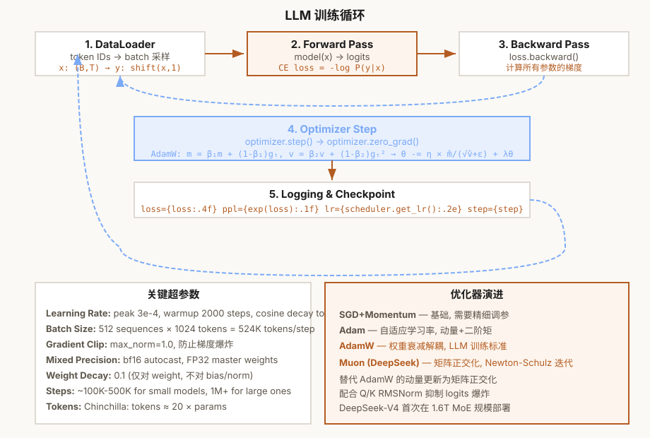

第7章 训练循环
从 MLE 到 AdamW/Muon + FP8/FP4 + DualPipe——极致的训练效率
本章怎么学：先让 loss 下降，再研究训练优化
- 前置知识：第 6 章 GPTModel、交叉熵、optimizer 的基本概念。
- 学习目标：从最大似然推导 next-token loss，搭建可复现训练循环，并解释 perplexity、calibration/ECE、AdamW、warmup、gradient clipping、混合精度与训练异常诊断。
- 本章产出：能训练小模型并观察 loss/perplexity/calibration 变化的训练循环。
- 完成标准：你能说清楚输入
x和目标y为什么相差一位。 - 练习产出：提交训练脚本、固定 seed 的 loss 曲线、checkpoint/resume 证明、异常诊断 runbook、tokens/s 和 GPU/CPU 成本估算；配套作业见 assignments/ch07_training/。

图 7-1: LLM 训练循环——从 DataLoader 到优化器更新
7.1 语言建模 = 最大似然估计 (MLE)
大语言模型的核心训练目标是 Next-token Prediction。但这不仅仅是一个"任务"——它的数学本质是最大似然估计（Maximum Likelihood Estimation, MLE）。理解这一点，你才能真正理解为什么这个损失函数是"正确"的。
自回归分解：链式法则
给定一个 token 序列 ，其联合概率可以通过概率的链式法则分解为：
这就是"自回归"（autoregressive）的严格数学定义——模型的输出依赖于自身的先前输出。这个分解是精确的，没有任何近似（在概率意义上）。
从联合概率到 MLE 目标
假设我们的训练数据 包含 N 个独立序列。在 MLE 框架下，我们想要找到参数 使得观测数据的似然最大化：
取对数将乘积转化为求和（便于优化）：
等价于最小化负对数似然（Negative Log-Likelihood, NLL）：
离散分布的参数化：Softmax
每个条件概率 是一个词表上的 categorical 分布。模型最后一层输出 logits （V 是词表大小），通过 softmax 转换为概率：
那么 。这就是 log_softmax。
等价视角：最小化 KL 散度
MLE 等价于最小化训练数据经验分布 和模型分布 之间的 KL 散度：
由于 是常数（与 无关），最小化 KL 散度等价于最小化交叉熵，等价于 MLE。三个视角是同一个目标。
7.2 困惑度 (Perplexity)
困惑度 (Perplexity, PPL) 是语言模型最常用的评估指标，定义为 NLL 的指数化：
PPL 的直观含义可以近似理解为：在该数据集和分词方式下，模型每个位置的平均不确定性有多大。这个解释只是一种便于记忆的口径，不能把 PPL 当作候选 token 个数或事实正确率。
- PPL = 1 — 在评测样本上把真实 token 的概率推到 1；现实语言数据通常存在固有不确定性，因此这只是极限情形
- PPL = 50 — 平均 NLL 为 ，可粗略理解为不确定性较高
- PPL = V — 若模型在大小为 的词表上均匀分布，则困惑度为
一个深刻的性质：如果模型分布是 ，真实分布是 ，那么 。当 时，——即完美模型困惑度就是数据的内在熵。所以 PPL 的下界是数据的固有不确定性。
解释 PPL 时必须固定评测条件
| 影响因素 | 为什么会影响 PPL | 报告时怎么写 |
|---|---|---|
| Tokenizer / vocab | token 粒度不同会改变序列长度和平均 NLL | 写明 tokenizer 和 vocab size |
| 数据集和切分 | 同一模型在新闻、代码、对话、书籍上的难度不同 | 写明 dataset、split 和过滤规则 |
| 上下文长度 | 长上下文可能降低局部困惑度，也可能引入截断差异 | 写明 context window 和 stride |
| 评测实现 | 是否包含 BOS/EOS、padding、滑窗和 loss mask 会改变数值 | 给出命令、seed 和 loss mask 规则 |
7.3 编程练习 1：实现 DataLoader
训练的第一步是将文本数据转换为模型可以消费的格式。核心流程：
文本 → Tokenizer → Token IDs → 分片为固定长度块 → 批量 → 模型
关键设计：每个样本的输入和目标是右移一位的关系——输入是 ，目标是 。这是因为模型在位置 t 的任务是预测位置 t+1 的 token。
练习 1：构建 DataLoader
任务：实现一个 PyTorch Dataset 和对应的 DataLoader 工厂函数。
要求：
TextDataset.__init__接收文本文件路径和分词器，在初始化时一次性对整个语料做 tokenize__getitem__返回(x, y)对，x 为block_size个 token，y 为右移一位的相同长度create_dataloader支持batch_size,shuffle,pin_memory,drop_last- 不要用 for 循环在
__getitem__中做 tokenize——应在__init__中一次性完成
# 预期用法
loader = create_dataloader(
data_path='shakespeare.txt',
tokenizer=bpe_tokenizer,
batch_size=8,
block_size=1024
)
x, y = next(iter(loader))
assert x.shape == (8, 1024)
assert y.shape == (8, 1024)
assert torch.equal(x[:, 1:], y[:, :-1])
💡 为什么在 __init__ 而非 __getitem__ 中 tokenize？每次调用 __getitem__ 都做 tokenize 会慢几百倍。一次性 tokenize 整个语料然后通过整数索引切片——这是标准做法，也是 PyTorch 官方教程推荐的方式。
7.3A 数据配比、Token Budget 与 Scaling Law
写出 DataLoader 只是训练系统的第一步。真正的大模型训练要先回答三个问题：训练多少 token、这些 token 从哪些数据源来、在给定算力下模型参数量和数据量如何平衡。这个问题决定 loss 曲线、模型能力边界和训练成本，不是调一个 batch_size 就能解决。
Token budget：训练步数不是 epoch 决定的
传统小数据集训练常说“跑 3 个 epoch”。LLM 预训练更常用 token budget 描述训练量，因为语料规模巨大、样本会被打包成连续 token stream，而且不同数据源可能按比例重复采样。设一次 optimizer step 消耗的全局 token 数为：
其中 是每张数据并行卡上的 micro-batch size， 是序列长度， 是 gradient accumulation steps， 是数据并行副本数。若计划训练 个 token，则训练步数近似为：
Ch07 作业中的 global_batch_tokens 和 training_steps_for_token_budget 对应这两个公式。举例：micro_batch=4、seq_len=2048、grad_accum=8、data_parallel=16 时，每步消耗 1,048,576 个 token；若训练预算是 20B token，则需要约 19,074 个 optimizer step。dense decoder-only LM 的粗略训练计算量常用 估算，其中 是参数量， 是训练 token 数；作业中的 dense_lm_training_flops 用这个近似把规模、数据和算力预算连起来。
训练显存还要包含优化器状态。AdamW 通常为每个参数保存梯度、一阶动量 m 和二阶动量 v；如果参数用 bf16、梯度用 bf16、moment 用 fp32，那么每个参数大约需要 2 + 2 + 2*4 = 12 bytes。Ch07 作业中的 optimizer_state_memory_bytes 把参数、梯度、optimizer states 和 ZeRO-style optimizer state sharding 的单卡粗估分开计算。
Worked Example：AdamW 显存账本与 ZeRO-1 分片
以一个 7B 参数的 dense decoder-only LM 为例，假设参数用 bf16（2 bytes）、梯度用 bf16（2 bytes）、AdamW 的一阶/二阶动量 m,v 用 fp32（各 4 bytes）。训练显存不能只按“7B × 2 bytes”估算，因为那只覆盖模型权重本身：
| 项目 | 每参数 bytes | 7B 参数总量 | 说明 |
|---|---|---|---|
| Parameters | 2 | 14 GB | bf16 模型权重 |
| Gradients | 2 | 14 GB | 反向传播后用于 optimizer step |
AdamW first moment m | 4 | 28 GB | fp32 一阶动量 |
AdamW second moment v | 4 | 28 GB | fp32 二阶动量 |
| 合计 | 12 | 84 GB | 只包含参数、梯度和优化器状态 |
如果使用 8 路数据并行但不分片，每张卡仍然复制完整的 84 GB 状态，显存不会因为数据并行自动下降。ZeRO-1 只把 optimizer states 分到不同 rank 上：参数和梯度仍然每卡各 14 GB，但 AdamW 的 m,v 总计 56 GB 会被 8 张卡分摊，每卡只保留约 7 GB。
因此在这个配置下，ZeRO-1 把参数/梯度/optimizer state 的每卡显存从约 84 GB 降到约 35 GB。这个数字仍然没有包含激活、activation checkpointing、通信 buffer、临时矩阵、CUDA allocator 碎片和 checkpoint 写入峰值；这些部分会继续限制实际 micro-batch size。
Data mixture：不是所有 token 等价
LLM 语料通常来自网页、书籍、代码、数学、百科、对话、领域文档等多个来源。训练时常按 mixture weight 采样，而不是按原始体量直接拼接。设第 个数据源的采样权重为 ，且 ，那么一个 batch 中来自各源的 token 比例会近似跟随这些权重。
| 数据决策 | 影响 | 常见风险 |
|---|---|---|
| 提高代码数据权重 | 增强程序合成、结构化推理和工具使用模式 | 自然语言风格变硬，许可证和重复代码风险上升 |
| 提高数学/推理数据权重 | 增强多步推导和符号操作能力 | 格式模板过拟合，泛化到真实问题不稳定 |
| 提高对话数据权重 | 增强指令遵循和交互风格 | 可能提前引入后训练偏好，削弱纯 LM 分布建模 |
| 强去重和质量过滤 | 降低记忆化、污染和低质量样本影响 | 过度过滤会损失长尾语言、领域和风格覆盖 |
数据配比没有通用最优解。严谨报告应说明 raw corpus、过滤规则、去重粒度、tokenizer、mixture weight、训练 token 数和评测集是否可能被污染。
最小数据诊断：重复率与 train/eval 重叠
课程作业中的 ngram_repetition_rate 和 ngram_overlap_rate 是训练前的最小 sanity check。重复率衡量同一 token n-gram 在语料中反复出现的程度；train/eval 重叠率衡量开发集或测试集中的 n-gram 是否已经出现在训练集里。
这不是完整去重系统：真实预训练还会用 near-duplicate detection、文档级哈希、MinHash/LSH、URL 归一化和 benchmark contamination 检查。但这个练习能让学生掌握核心判断：开发集 loss 低不一定代表泛化好，也可能是切分泄漏或重复样本让模型提前见过答案。
Chinchilla-style scaling：模型大小与数据量要配平
Hoffmann et al. (2022) 的 Chinchilla 结论改变了大模型训练的常见直觉：在固定训练算力下，不能只把参数量做大；如果 token 数不足，大模型会处于 under-trained 状态。简化地说，训练成本主要随参数量 、训练 token 数 和每 token 前后向计算量共同增长，常用粗略量级写作：
因此，给定算力预算 时，课程中应比较的是 参数量、token 数、数据质量和训练时长 的组合，而不是孤立比较“模型有多少 B 参数”。小模型训练项目也遵循同一思想：如果只增大模型而数据很少，训练 loss 可能下降，但开发集 PPL 和生成质量可能变差；如果数据很多但模型太小，模型容量可能成为瓶颈。
7.3B 预训练数据管线：质量、去重、隐私与采样配比
Token budget 说明“训练多少”，data mixture 说明“从哪里采样”，但训练工程师还必须回答“哪些 token 不应该进入训练”。预训练数据管线不是简单把网页、书籍、代码和对话拼起来；它要在质量、覆盖、合规、隐私、偏见、污染和成本之间做取舍。许多训练失败不是优化器问题，而是数据管线把错误信号稳定地送进了模型。
1. 从 raw corpus 到 training tokens 的流水线
| 阶段 | 核心问题 | 工程动作 | 常见失败 |
|---|---|---|---|
| Source inventory | 数据从哪里来，能否用于训练 | 记录来源、时间、语言、领域、许可证或使用限制 | 混入不可用数据，后续无法解释模型记忆来源 |
| Normalization | 同一文本是否被稳定表示 | Unicode 规范化、HTML 清洗、代码块保留、空白和换行策略 | 破坏代码缩进、表格结构或多语言字符 |
| Quality filtering | 样本是否有训练价值 | 去空文档、低信息密度文本、乱码、模板页、重复导航栏 | 过度过滤损失长尾语言和领域术语 |
| Safety / privacy filtering | 是否包含敏感或高风险内容 | PII 检测、密钥/凭据模式、极端有害内容标记、领域黑名单 | 模型记住个人信息、API key 或危险操作细节 |
| Deduplication | 重复内容是否扭曲训练分布 | 文档级哈希、URL 归一化、MinHash/SimHash、n-gram overlap | 重复样本导致记忆化、val loss 虚低、长尾被热门副本淹没 |
| Split and packing | train/val/test 是否隔离，token 是否高效装箱 | 按文档或来源切分，保留边界 token，记录 packing 策略 | 同一文档片段跨 split 泄漏，packing 打穿样本边界 |
| Mixture sampling | 各来源 token 比例如何进入 batch | 设置 mixture weights、温度采样或分阶段课程 | 高质量小源被淹没，低质量大源主导梯度 |
2. 去重不是越强越好
去重的目标是降低记忆化和污染，而不是把语料压成最小集合。Exact duplicate 去掉完全相同文档；near-duplicate 处理模板页、镜像站、转载和轻微改写；benchmark contamination 还要查公开题目和答案是否以近似形式出现在训练语料里。粒度不同，风险也不同：
| 粒度 | 适合发现 | 可能误伤 | 报告中应写清 |
|---|---|---|---|
| URL / 文档哈希 | 完全重复网页、镜像文件、重复 dump | 同源但更新后的有效版本 | canonicalization 规则、保留哪个版本 |
| MinHash / SimHash | 近重复文章、模板正文、轻微改写 | 法律条文、代码 boilerplate、引用格式 | 相似度阈值、按语言/领域的误删抽样 |
| n-gram overlap | train/eval 泄漏、公开 benchmark 题面重叠 | 常见短语、固定 API 用法 | n 的大小、overlap 阈值、命中样例处理 |
| embedding nearest neighbor | 语义近似改写和 paraphrase | 主题相近但答案不同的样本 | 模型、阈值、人工抽样结果 |
例如代码语料里，import、许可证头、常见函数签名和框架样板会产生大量重复。如果阈值过严，模型会失去真实代码风格；如果阈值过松，模型又会记住热门仓库和训练集答案。合理做法是按数据源和任务风险分层处理，而不是全库统一一个相似度阈值。
3. PII、凭据和版权风险要进入训练账本
课程不把法律判断简化成一个自动分类器，但工程上必须知道风险从哪里进入。PII 可能以邮箱、电话、地址、身份证号、病历、聊天记录形式出现；代码语料可能包含 API key、private token、密码或内部 URL；网页和书籍还涉及来源授权、引用、再分发和下游生成风险。数据报告至少要写出：过滤规则、命中比例、保留/删除策略、人工抽样结果，以及哪些风险无法由当前规则覆盖。
4. Mixture weight 是优化信号，不是数据占比
如果网页有 10T tokens、代码有 1T tokens，并不意味着 batch 中必须 10:1 采样。训练工程师可以提高高质量或目标能力相关数据的采样权重，也可以对不同数据源使用 temperature sampling：
其中 n_i 是第 i 个数据源的 token 数。alpha=1 接近按原始体量采样；alpha<1 会抬高小数据源的相对权重。这样可以避免低资源语言、数学、代码或领域文档完全被网页数据淹没，但也可能导致小源被重复采样过多，带来过拟合和风格偏移。
Worked Example：同样 20B tokens，不同数据管线会训练出不同模型
假设两个训练 run 都使用 20B token、同一模型和同一优化器。Run A 直接按原始体量混合网页、代码和百科；Run B 先做文档级去重、PII/凭据过滤，再用 alpha=0.7 的 temperature sampling 抬高代码和数学小源。即使 token budget 相同，两个 run 的梯度分布也不同：Run B 可能在代码和数学验证集上更好，网页风格更少重复，训练吞吐略降，因为过滤和分层采样增加了数据准备成本。报告中应把这种差异写成数据管线差异，而不是简单归因于“模型训练更久”或“学习率更好”。
7.4 交叉熵的理论基础与数值稳定性
语言建模使用的损失函数是交叉熵。前面我们已经从 MLE 和 KL 散度两个角度推导了它的正确性，现在深入它的数值计算细节。
数值不稳定性的根源
直接用"softmax 后取 log"是数值不稳定的。当 logits 值很大时（LLM 最后一层的 logits 值可达 30+）， 已经接近 FP16 上限（）的 10 亿倍——FP16 会直接溢出到 inf。
标准解决方案是 Log-Sum-Exp Trick：提取最大值 ：
因为 ，所以 ，在任意精度下都不可能溢出。PyTorch 的 F.cross_entropy 和 F.log_softmax 都内置了这个技巧。
(batch, seq_len, vocab_size) 展平为 (batch*seq_len, vocab_size)。如果不对 logits 做 .view(-1, vocab_size)，F.softmax 会在错误的维度上做归一化——它会在整个 batch+seq 联合空间上做 softmax，而不是在每个 token 位置上单独做。7.4A 从 Cross-Entropy 梯度看训练到底在更新什么
手动实现 cross entropy 解决的是前向数值稳定性；理解训练还需要看它的梯度。对单个 token 位置，设 logits 为 ，softmax 概率为 ，目标类别为 。损失为 。
这个结果非常重要：正确 token 的梯度是 ，通常为负；梯度下降会提高正确 token 的 logit。错误 token 的梯度是 ，梯度下降会降低它们的 logit，降低幅度与模型当前给它们的概率成正比。
梯度如何回到 LM Head 和 Embedding
如果 logits 来自 tied LM head：
其中 是最后一层 hidden state， 是词嵌入矩阵。由链式法则：
- LM head / output embedding：目标 token 行会被拉近当前 hidden state，过高概率的错误 token 行会被推远。
- Transformer hidden state：梯度 会继续穿过 final norm、block、attention 和 FFN。
- 输入 embedding：只有 batch 中实际出现的 token 行通过 embedding lookup 收到梯度；没有出现的 token 行不会在输入侧被更新。
Mask 对梯度的影响
在 padding、SFT label mask 或 packed sequence 中，被设为 ignore index 的位置不应该贡献 loss，也不应该贡献梯度。实现上不是把这些位置的概率设为 0，而是在 reduction 前把对应 NLL 从平均中排除。否则模型会被迫预测 padding、prompt 或无效位置，训练目标就会偏离真实任务。
课程作业中的 cross_entropy_logits_gradient 要求把这个规则写成张量计算：有效位置的梯度是 (softmax(logits) - one_hot(target)) / N_valid，被忽略位置整行梯度为 0。这个函数把书面推导和 PyTorch autograd 的实际梯度对齐起来。
Label smoothing：不把目标分布当成绝对 one-hot
标准 next-token CE 把正确 token 的目标概率设为 1，其余 token 设为 0。Label smoothing 把少量概率质量 分给非目标类：
这会降低模型对单个标签的过度自信，常见于分类、机器翻译和早期 seq2seq 训练。它不是“让答案变模糊”，而是在训练目标里表达标签噪声、同义候选和有限标注不确定性。Ch07 作业中的 label_smoothed_cross_entropy 要求学生显式构造平滑目标分布，并保持 ignore_index 不进入平均；这也是理解 distillation soft targets 的前置步骤。
概率校准：模型说“90%”时真的有 90% 对吗？
Perplexity 衡量模型给真实 token 的平均概率，但它不直接告诉我们模型置信度是否可信。校准关注另一个问题：把所有 confidence 约为 0.9 的预测放在一起，正确率是否也约为 0.9？如果一个模型经常以 0.95 confidence 预测错误，它不适合直接把 softmax probability 当作拒答阈值、风险分数或自动化决策依据。
其中 是第 个置信度桶， 是桶内预测正确率， 是桶内平均最大 softmax 概率。Ch07 作业中的 expected_calibration_error(logits, targets, n_bins) 要求学生从 logits 计算 confidence、prediction、correctness 和分桶 ECE，并沿用 ignore_index 避免 padding 或 prompt 位置污染评估。
Worked Example：手算 ECE
设二分类模型在 4 个位置上的 logits 与目标如下，使用 2 个置信度桶： 和 。
| 位置 | logits | target | prediction | confidence | correct |
|---|---|---|---|---|---|
| 1 | [3.0, 0.0] | 0 | 0 | 0.953 | 1 |
| 2 | [0.0, 3.0] | 1 | 1 | 0.953 | 1 |
| 3 | [3.0, 0.0] | 1 | 0 | 0.953 | 0 |
| 4 | [0.2, 0.0] | 0 | 0 | 0.550 | 1 |
二分类的最大 softmax 概率不会低于 0.5，因此第一个桶为空，第二个桶包含全部 4 个样本。该桶内 ，平均置信度 ，所以 。这说明模型整体准确率不低，但它给出的概率偏自信；如果用 confidence 控制拒答或人工复核阈值，就需要额外校准。
7.5 编程练习 2：手动实现 Cross-Entropy Loss
现在你理解了交叉熵的数学原理和数值稳定性问题。请手动实现它——不要使用 torch.nn.CrossEntropyLoss 或 F.cross_entropy。
练习 2：手动实现交叉熵损失
任务：实现 cross_entropy_manual(logits, targets) 函数。
要求：
- 输入
logits: (batch, seq_len, vocab_size)，targets: (batch, seq_len) - 输出标量损失（所有位置的平均 NLL）
- 必须先将 logits 展平为 2D
- 必须使用 Log-Sum-Exp Trick
- 与 PyTorch 内置交叉熵的结果差异必须 < 1e-5
# 预期用法 logits = torch.randn(4, 64, 50257) targets = torch.randint(0, 50257, (4, 64)) loss = cross_entropy_manual(logits, targets) loss_ref = F.cross_entropy(logits.view(-1, 50257), targets.view(-1)) assert abs(loss - loss_ref) < 1e-5
💡 gather 的作用：log_softmax.gather(-1, index) 从最后一维中取出 index 位置的值——即正确 token 的 log 概率。这等价于 log_probs[arange(N), targets]。
7.6 学习率调度的理论理解
许多现代 LLM 训练使用 Warmup + Cosine Decay 或相近的平滑衰减调度。这不是随意的选择：warmup 可以缓解训练初期的优化不稳定，平滑 decay 则减少学习率突变带来的扰动。
为什么需要 Warmup？
Adam 在第一步时，，。不带 warmup 时，初始更新步长约等价于：
这意味着初始有效步长约 （对于 ）。模型在训练初期使用过大的步长，可能直接 diverges。Warmup 让学习率从 0 线性增长到 ，给动量一个"预热"时间。
为什么用 Cosine Decay 而非 Step Decay？
Step Decay（如每 30 epoch 衰减 10 倍）造成的学习率"跳变"会在损失函数中引起对应的震荡——学习率突然变小，模型从"探索"突然进入"利用"，损失函数都会产生一个跳变。Cosine Decay 的学习率连续平滑变化，损失函数也平滑下降。
典型的调度曲线形状
Cosine Decay 在早期保持较高的学习率（快速探索参数空间），在中期快速下降（找到好的局部区域），在后期缓慢趋近于 0（精细收敛）。这种"快-快-慢"的模式在大规模训练中很常见；具体效果仍依赖 batch size、模型规模、优化器、训练 token 预算和是否需要持续预训练。
Worked Example：按 optimizer step 复算 lr 与 consumed tokens
设 base_lr=0.2、num_warmup_steps=2、num_training_steps=6、min_lr_ratio=0.25，每个 optimizer step 消耗 1000 tokens。step 0 还在 warmup 起点，lr multiplier 为 0，实际 lr 为 0，累计 token 为 0；step 1 的 multiplier 为 1/2，lr 为 0.1，累计 token 为 1000；step 2 进入 cosine 阶段起点，multiplier 回到 1.0，lr 为 0.2；step 6 到达训练终点，multiplier 为 0.25，lr 为 0.05，累计 token 为 6000。
这个例子强调 scheduler 应该按成功的 optimizer step推进，而不是按 micro-batch backward 次数推进。如果 grad_accum_steps=4 却每个 micro-batch 都调用一次 scheduler，warmup 和 cosine decay 会比 token 进度快 4 倍走完。Ch07 作业中的 lr_schedule_trace 要求把每个 step 的 phase、lr multiplier、实际 lr 和 consumed tokens 显式列出来。
7.7 编程练习 3：实现 AdamW 优化器
AdamW 是目前 LLM 训练中最广泛使用的优化器。它的核心创新是解耦的权重衰减（Decoupled Weight Decay）
为什么需要解耦？
在标准 Adam 中， 正则化在损失函数中加入 ，其梯度为 。但 Adam 的自适应学习率会不正确地缩放这个正则化项——梯度大的参数正则化被缩小，梯度小的参数正则化被放大。AdamW 将权重衰减放在 Adam 更新之后，独立于梯度计算和动量：
最后一行中的 就是解耦的权重衰减——它不参与动量计算，直接作用在参数上。
练习 3：实现 AdamW 优化器
任务：实现 AdamW 类，支持偏置修正和解耦权重衰减。
要求：
- 维护一阶动量
m和二阶动量v（均初始化为零） step(grads=None)方法实现上述完整更新规则- 偏置修正使用
1 - beta^t（t 从 1 开始计数） - 权重衰减独立于梯度，在最后一行单独应用
# 预期用法 optim = AdamW(model.parameters(), lr=3e-4, betas=(0.9, 0.95), weight_decay=0.1) loss.backward() optim.step() # 更新所有参数 optim.zero_grad()
💡 为什么偏置修正是必要的？Adam 初始化 ，所以初期几步的动量估计严重偏向 0。偏置修正通过除以 来补偿这种偏差。随着 t 增大，，修正自动消失。
7.8 编程练习 4：实现 Warmup + Cosine Decay 调度器
练习 4：学习率调度器
任务：实现一个带 Warmup 的 Cosine Decay 学习率调度器。
要求：
- Phase 1 (Warmup, step < num_warmup_steps)：lr 从 0 线性增长到 max_lr
- Phase 2 (Cosine Decay)：lr 从 max_lr 余弦衰减到
max_lr * min_lr_ratio - 函数返回
torch.optim.lr_scheduler.LambdaLR实例 - 在 warmup 结束时 lr 必须恰好等于 max_lr（无跳变）
- 使用
math.cos实现余弦曲线
# 预期用法
scheduler = get_cosine_schedule_with_warmup(
optimizer, num_warmup_steps=1000, num_training_steps=100000
)
for step in range(100000):
loss = train_step()
loss.backward()
optimizer.step()
scheduler.step()
💡 边界条件：progress 在 warmup 结束时为 0，此时 cos(0) = 1，cosine_decay = 1，返回值为 1 — warmup 的最终 lr 恰为 max_lr。在训练结束时 progress = 1，cos(pi) = -1，cosine_decay = 0，返回值 = min_lr_ratio。
7.9 Muon 优化器案例——矩阵正交化的力量
Muon（Keller Jordan, 2024）是一类把矩阵参数的动量方向做正交化处理的优化器案例。它的核心思想与 AdamW 有根本的不同：AdamW 试图自适应地调整每个参数的学习率，而 Muon 试图将动量矩阵正交化，更直接地处理矩阵权重的方向更新。
为什么正交化有助于优化？
当权重矩阵的特征值分布不均匀时（某些方向的变化幅度远大于其他方向），梯度下降的效率很低——模型在"陡峭"方向上震荡，在"平缓"方向上进展缓慢。Muon 通过 Newton-Schulz 迭代 将梯度矩阵投影到最近的正交矩阵：
这个迭代快速收敛到 的极分解 ——即去掉了奇异值 ，只保留正交方向。5 次迭代通常就足够收敛。直观理解：它保留了梯度的方向信息但丢弃了幅度信息——因为幅度已经被学习率控制。
Muon vs. AdamW 的内存对比
AdamW 需要维护 和 两个状态——每个参数额外 2 个张量。Muon 只维护一个动量缓冲（它正交化的是动量、而非原始梯度），因此优化器显存约减半。训练 70B 模型时（每个状态按 2 bytes 计）：AdamW 约 GB，Muon 约 140 GB——节省约 140GB。
nn.Linear 权重、nn.Embedding 权重）更自然。bias 和 LayerNorm 的 gamma/beta 是 1D 的，不适合直接做矩阵正交化，通常应退化为标准 SGD、AdamW 或单独参数组。实际采用哪些参数、阈值和混合策略必须由实验设定说明。7.10 FP8/FP4 混合精度训练——DeepSeek-V3 的大规模案例
DeepSeek-V3 技术报告把 FP8 mixed precision 作为其大规模训练效率的重要组成部分。FP8 相比 BF16 能降低激活/通信/部分矩阵计算的数据宽度，并在合适硬件上提升吞吐；实际收益取决于硬件、kernel、缩放策略和误差控制，不能简单写成固定 2 倍或完全无质量损失。
FP8 的两种格式
- E4M3 (4-bit 指数, 3-bit 尾数) — 范围 ±448，用于前向传播的权重和激活
- E5M2 (5-bit 指数, 2-bit 尾数) — 范围 ±57344，用于反向传播的梯度（梯度需要更大动态范围）
Block-wise 缩放
FP8 不是简单地"截断"FP32 值。它对每个小的块（block，通常 128 个元素）计算一个缩放因子 ：
缩放因子 确保了块内的最大值被映射到 FP8 的最大可表示值。不同块的缩放因子不同——数值大的区域精度低，数值小的区域精度高。这类似于非均匀量化：通过缩放将信息集中在高分辨率区域。
FP4 QAT：更激进的低精度训练设想
FP4 只有 16 个可表示的值，比 FP8 更激进。量化感知训练（QAT）会在训练过程中模拟量化误差（常见实现会用 Straight-Through Estimator 一类近似），让模型逐步适应低精度表示。课程把 FP4 QAT 作为低精度训练的概念延伸：它可能降低权重存储和带宽压力，但误差控制、scale metadata、kernel 支持和任务质量都必须实测。
7.11 编程练习 5：实现完整的训练循环
现在把你之前实现的组件组合在一起——一个包含 forward + backward + AMP + gradient clipping + logging 的完整训练循环。真实训练中还要处理 gradient accumulation；下面的参考实现是单 batch 一个 optimizer step 的最小版本，累积版本见后面的 worked example。
练习 5：训练循环
任务：实现 train(model, dataloader, optimizer, scheduler, config) 函数。
要求：
- 支持混合精度（BF16 或 FP16）
autocast - 使用 GradScaler 防止 FP16 梯度下溢出
- 梯度裁剪（
clip_grad_norm_） - 每个 batch 后调用
scheduler.step() - 每
config.log_interval个 batch 打印 loss, PPL, LR, grad norm - 每个 epoch 结束后打印平均 loss 和 PPL
- 记录 loss_history 列表供后续绘图
# 预期用法 config = TrainConfig(num_epochs=10, log_interval=50, max_grad_norm=1.0) model = train(model, loader, optimizer, scheduler, config) # 输出示例: # Epoch 1/10 | Batch 50/200 | Loss 5.23 | PPL 187.6 | LR 2.1e-4 | GradNorm 0.89
💡 scaler.unscale_ 的位置：梯度裁剪必须在解缩放后（unscale_）但在optimizer.step 之前。如果先裁剪再解缩放，裁剪的阈值与实际的梯度范数不在同一个尺度上。
7.11A Worked Example：一次 optimizer step 的顺序账本
假设使用 grad_accum_steps=4，每个 micro-batch 的 mean loss 分别是 [2.4, 2.0, 1.8, 2.2]。为了让 4 个 micro-batch 累积后的梯度等价于一个大 batch mean，需要在每次 backward 前把 loss 除以 4：
如果没有把 loss 除以 grad_accum_steps，累积梯度会比大 batch mean 大 4 倍，等价于把学习率放大 4 倍。若使用 FP16 GradScaler，裁剪必须发生在 unscale_ 之后；否则你裁剪的是被 scaler 放大的梯度，max_norm=1.0 不再对应真实梯度范数。学习率调度器通常在成功的 optimizer step 后推进一次，而不是每个 micro-batch 推进一次；否则 warmup 和 cosine decay 会按 micro-step 过快走完。Ch07 作业中的 gradient_accumulation_step_accounting 把 scaled losses、optimizer steps、scheduler steps 和 consumed tokens 明确算出来。
这也是训练日志里 step 和 tokens 要同时记录的原因：4 个 micro-batch 只对应 1 次 optimizer step，但消耗的 token 是四个 micro-batch 的总和。PPL 应由未除以 accumulation 的原始 mean loss 计算；用于 backward 的缩放 loss 只是梯度尺度技巧，不是模型困惑度。
7.11B 如何读训练日志：从 loss 曲线到系统瓶颈
能让 loss 下降只是训练工程的起点。工程师需要能解释为什么曲线这样变化：哪些现象是正常随机波动，哪些说明优化器、数据、数值精度或系统吞吐出了问题。训练日志至少应同时记录 train_loss、val_loss、lr、grad_norm、tokens/s 和 step。
先区分三类问题
| 现象 | 更可能来自 | 第一步检查 | 常见处理 |
|---|---|---|---|
| train loss 和 val loss 同时平滑下降 | 正常学习 | 确认 lr、batch tokens 和 eval split 固定 | 继续训练，观察是否进入平台期 |
| train loss 下降、val loss 上升 | 过拟合、数据太小或开发集分布不同 | 比较 train/val 数据来源和重复样本 | 增加数据、正则化、早停或调整 mixture |
| loss 突然 spike 但随后恢复 | 异常 batch、过大学习率、混合精度尺度变化 | 定位该 step 的样本、lr 和 grad_norm | 降低 max_lr、增强 clipping、过滤异常样本 |
| loss 变成 NaN/Inf | 数值溢出、FP16 scaler、logits 爆炸或无效数据 | 检查 logits、grad_norm、输入 token 是否越界 | 回退 checkpoint，降低 lr，切 BF16 或修正 loss mask |
| grad_norm 长期接近 0 | 学习率过低、梯度被错误清零、loss mask 错误 | 确认 labels 非全 -100，参数 requires_grad=True | 修正 mask/冻结设置，提高 lr 或检查 backward |
| tokens/s 突然下降 | IO、数据加载、显存碎片、通信或评测插入 | 比较 dataloader time、GPU utilization 和 batch shape | 增加 num_workers、预取数据、固定 shape、减少同步日志 |
Grad norm 应该怎么解释
grad_norm 不是越小越好，也不是越大越好。它是当前 batch 对参数提出的更新强度。结合学习率看更有意义：高 grad_norm + 高 lr 容易造成 spike；高 grad_norm 但被 clipping 稳定截断，可能只是偶发 hard batch；低 grad_norm + loss 不降，常见于学习率太低、mask 错误或模型路径断开。
全局范数裁剪先把所有参数梯度视为一个长向量，计算 ，再用同一个系数缩放所有梯度：
逐参数单独裁剪会改变不同层之间的梯度比例；global clipping 保留方向，只在总更新过大时缩短步长。Ch07 作业中的 clip_grad_norm(parameters, max_norm) 要求学生手动计算这个系数，并返回裁剪前的 total norm 与实际使用的 clip coefficient。
一个实用的排查顺序
- 先查数据和 label shift：
x[:, 1:] == y[:, :-1]是否成立，padding/ignore_index 是否正确，是否有空样本、极长样本或重复污染。 - 再查数值：logits、loss、grad_norm 是否有限；FP16 下 scaler 是否频繁跳变；BF16 是否更稳定。
- 再查优化器：lr schedule 是否在 warmup 边界跳变，AdamW 权重衰减是否作用到 norm/bias，gradient clipping 是否在 unscale 之后。
- 最后查系统：tokens/s 的瓶颈是在数据加载、前向/反向、optimizer step、评测还是 checkpoint 写盘。
7.11C 训练异常 Runbook：从 loss spike 到可恢复决策
真实 LLM 训练不会一直平滑下降。工程师的价值在于异常出现后能快速判断：继续训练、回退 checkpoint、降低学习率、过滤数据、切换精度，还是暂停作业修系统。本课程要求掌握异常分类、信号记录、根因假设、最小修复实验和恢复决策，而不是看到 NaN 就重启。
1. 先把异常定位到时间和 token 坐标
训练日志应同时记录 step、consumed_tokens、epoch_or_shard、lr、train_loss、val_loss、grad_norm、tokens/s、loss_scale、checkpoint_id 和数据 batch 摘要。只记录 wall-clock 时间不够，因为扩卡、gradient accumulation 或数据并行数变化后，同一 wall-clock 不对应同一训练进度。
例如 step 12,500、global batch 2M tokens 时发生 spike，对应约 25B consumed tokens。若 resume 后同一 consumed-token 附近再次出现 spike，优先怀疑数据 shard 或 lr schedule；若位置漂移很大，优先看随机性、精度或系统资源。
2. 把 loss spike 分成三类
| 类别 | 典型现象 | 优先检查 | 推荐动作 |
|---|---|---|---|
| Recoverable spike | 单点或少量 step 升高，随后回到原趋势 | 异常 batch 长度、重复率、grad_norm、lr | 记录样本，保留训练；必要时加强 clipping 或数据过滤 |
| Regime change | spike 后 loss 平台整体抬高或 val loss 恶化 | 数据 mixture 切换、lr decay 边界、batch size 变化 | 跑短 ablation：固定数据、降低 lr、回退前一 checkpoint 对照 |
| Divergence | loss 变 NaN/Inf，grad_norm 爆炸，无法自动恢复 | logits 有限性、FP16 loss scale、输入 token 越界、mask 全空 | 回退最近健康 checkpoint，降低 lr 或改 BF16，隔离坏 batch |
判断一个 spike 是否“可恢复”，不能只看下一步 loss。至少看接下来几个 eval window 的 train/val 趋势、grad_norm 分布和任务指标。如果开放式生成或安全指标明显退化，即使 PPL 恢复，也应继续定位。
3. NaN/Inf 的最短排查路径
- 输入合法性：
input_ids是否在[0,V)，labels 是否全是ignore_index，attention mask 是否把有效 token 全屏蔽。 - 前向有限性：逐层检查 activation、logits 和 loss 是否 finite；若 logits 已爆，优先看初始化、norm、残差缩放和 lr。
- 反向有限性：检查梯度是否 finite，是否在
unscale_后再 clipping，是否有自定义 kernel 返回 NaN。 - 优化器状态：AdamW moment 是否 finite，resume 是否加载了损坏状态，weight decay 是否错误作用到 norm/bias。
- 精度策略：FP16 scaler 是否频繁 overflow；能用 BF16 时优先做 BF16 对照短跑。
4. Resume 后曲线不连续，要先查状态完整性
恢复训练后的 loss 突然跳变，并不总是模型坏了。常见原因是 checkpoint 只恢复了 model weights，没有恢复 optimizer moments、scheduler step、RNG 和 dataloader position。一个可恢复 checkpoint 的验证方式是：在同一 checkpoint 上跑“连续训练 20 steps”和“训练 10 steps、保存、恢复、再训练 10 steps”，比较 step、lr、loss 序列、consumed tokens 和 eval 结果是否在允许随机误差内一致。
| 缺失状态 | 恢复后表现 | 验证信号 |
|---|---|---|
| optimizer moments | 短期 loss 震荡，更新方向改变 | AdamW exp_avg/exp_avg_sq 为空或 step 归零 |
| scheduler state | lr 跳回 warmup 或错误 decay 位置 | resume 前后 lr 不连续 |
| RNG state | dropout、shuffle、augmentation 路径变化 | 固定 seed 下 loss 序列不能复现 |
| dataloader position | 重复或跳过数据 shard | consumed tokens 与样本 offset 不一致 |
| grad scaler | FP16 overflow 行为突变 | loss_scale resume 后重置 |
5. 吞吐下降不等于模型变慢
tokens/s 下降时，要拆成 dataloader、H2D copy、forward、backward、optimizer、communication、eval 和 checkpoint 写盘。若 GPU utilization 低但 dataloader queue 空，优先优化数据读取；若 backward 后等待很久，优先看 DDP/FSDP communication；若每到 eval 或 checkpoint 周期就掉速，应把慢评估移到独立 worker 或降低 checkpoint 频率。
6. 最小修复实验
修复训练异常时，避免一次改很多配置。推荐按以下顺序做短跑：
- 坏 batch replay：只用异常 step 附近 batch，在单卡上复现 forward/backward。
- precision ablation：FP32/BF16/FP16 短跑对比，判断是否是动态范围问题。
- lr ablation：保持数据和 seed 不变，只降 max_lr 或延长 warmup。
- data ablation：去掉可疑数据源或极端长度样本，看 spike 是否消失。
- resume parity：验证连续训练与保存恢复训练是否同轨。
最终报告应写出“我观察到什么、排除了什么、改变了什么、为什么这个改变足以支持结论”。这是本课程对实现和分析能力的核心要求：学生不只是交代码，还要能解释模型训练行为。
7.12 编程练习 6：在 Shakespeare 上训练并生成文本
将所有组件组合起来，在 Shakespeare 文本上训练一个微型 GPT 模型。
练习 6：端到端训练 + 文本生成
任务：在 Tiny Shakespeare 数据集上训练一个微型 GPT 模型，绘制 loss 曲线，并用训练好的模型生成文本。
要求：
- 使用字符级分词（每个字符作为一个 token，词表约 65）
- 模型配置：d_model=128, n_layers=4, n_heads=4, max_seq_len=128
- 训练 10 epoch，记录并返回 loss_history
- 使用你之前实现的 train 函数
- 训练结束后用 matplotlib 绘制 loss 曲线（含滑动平均平滑版本）
- 用 temperature=0.8 生成 200+ tokens
# 数据集来源 url = "https://raw.githubusercontent.com/karpathy/char-rnn/master/data/tinyshakespeare/input.txt" # 生成输出结构: # Step 1: 准备数据 → "数据: XXXX 字符, 词表: 65" # Step 2: 创建模型 → "设备: cuda" # Step 3: 训练 10 ep → loss 从 ~3.5 降到 ~1.5 # Step 4: 绘制曲线 → matplotlib 图 # Step 5: 生成文本 → "ROMEO: But soft!..."
7.13 DualPipe 流水线并行——消除气泡的艺术
DualPipe 是 DeepSeek-V3 引入的流水线并行优化方案，其核心是解决标准流水线并行中的气泡 (bubble) 问题。
传统流水线的问题
在 GPipe 中，所有 micro-batch 先完成前向，再开始反向。这导致流水线开始和结束时有大量 GPU 空闲：
DualPipe 的双向调度
DualPipe 从流水线的两端同时推进——前向从开始端推进，反向从结束端推进，两者在中间相遇。同时将 All-to-All 通信重叠在计算中：
7.14 单机训练主线总结
你完成了 LLM 训练循环的完整学习：
- ✅ MLE 框架 — 语言建模 = 最大化对数似然 = 最小化交叉熵 = 最小化 KL 散度
- ✅ Perplexity — PPL = exp(loss)，有效分支因子的度量
- ✅ 编程练习 1：DataLoader — 文本分片、批量、右移一位目标
- ✅ 数据与 Token Budget — 训练步数、global batch tokens、mixture weight 和 scaling law
- ✅ 编程练习 2：Cross-Entropy — 手动实现 + Log-Sum-Exp 数值稳定技巧
- ✅ CE 梯度与反向传播路径 — logits 梯度、LM head、embedding 和 mask 对更新的影响
- ✅ 编程练习 3：AdamW — 动量 + 自适应学习率 + 解耦权重衰减
- ✅ 编程练习 4：Warmup + Cosine Decay — 学习率调度器
- ✅ 编程练习 5：完整训练循环 — forward + backward + AMP + clipping + logging
- ✅ 训练日志诊断 — 用 loss、val loss、grad_norm 和 tokens/s 区分优化、数据、数值和系统问题
- ✅ 编程练习 6：Shakespeare 实战 — 端到端训练 + 生成 + 绘图
- ✅ Muon 优化器 — Newton-Schulz 正交投影的理论
- ✅ FP8/FP4 — Block-wise 缩放、E4M3/E5M2、QAT
- ✅ DualPipe — 双向流水线消除气泡
7.15 分布式训练——从单 GPU 到千卡集群
到目前为止，我们假设所有训练都在单个 GPU 上进行。但真实的 LLM 训练（如 Llama 3 405B）需要在数千个 GPU 上并行运行数周。分布式训练不是"可选"优化——它是使得大模型训练成为可能的前提。
先问两个问题：装不装得下，跑不跑得快
分布式训练的第一原则不是“GPU 越多越好”，而是把瓶颈拆开：
- 容量问题：参数、梯度、优化器状态、激活和通信 buffer 是否能放进单卡显存。
- 吞吐问题：tokens/s 是否受矩阵乘、显存带宽、通信、数据加载或流水线气泡限制。
- 稳定性问题：global batch tokens、学习率、loss scale、checkpoint 频率和失败重跑是否匹配。
工程上先用单卡或少卡确认 loss 曲线、数据和 checkpoint，再扩大并行规模。若小规模训练都不稳定，增加 GPU 只会把问题放大。
每卡显存账本：参数不是主要全部
以 BF16 参数训练、FP32 AdamW optimizer state 为例，单个参数通常对应：
很多实现还会保留 FP32 master weights，则再增加 4 bytes / parameter。粗略显存账本可以写成：
如果一个 7B dense LM 用 BF16 参数、BF16 梯度和 FP32 AdamW states，不考虑激活时模型状态约为 7e9 * 12 = 84GB。这说明“7B 模型参数只有 14GB”并不等于“24GB GPU 可以完整训练”。训练显存的主项通常是 optimizer state 和激活，而不是参数本身。
Worked Example：ZeRO 分片怎样改变每卡显存
设参数量 ，BF16 参数/梯度，AdamW 两个 FP32 moments，共 12 bytes/param。用 8 卡数据并行训练：
| 方案 | 每卡模型状态近似 | 说明 |
|---|---|---|
| DDP | 7B * 12 = 84GB | 每卡都有完整参数、梯度和 optimizer states |
| ZeRO-1 | 7B * (2 + 2 + 8/8) = 35GB | 只分片 AdamW states，参数和梯度仍完整 |
| ZeRO-2 | 7B * (2 + 2/8 + 8/8) = 22.75GB | 分片梯度和 optimizer states |
| ZeRO-3 / FSDP | 7B * (2 + 2 + 8) / 8 = 10.5GB | 参数、梯度和 optimizer states 都分片 |
这个表只计算模型状态，不含激活、KV-style attention 中间张量、通信 buffer、CUDA workspace 和碎片。真实预算应再加上 activation memory，并通过 profiler 校验峰值。
四类并行策略
| 策略 | 原理 | 主要通信 | 适合场景 | 常见风险 |
|---|---|---|---|---|
| DDP / Data Parallel | 每 GPU 持完整模型副本，各处理不同 batch 切片 | 梯度 AllReduce | 模型状态能放进单 GPU，主要想扩大 batch | global batch 过大导致泛化或优化变差 |
| FSDP / ZeRO | 分片参数、梯度和 optimizer state | 参数 AllGather、梯度 ReduceScatter | 模型状态装不下，但每层计算仍适合单卡/少卡 | 通信频繁，wrap 粒度和重算策略影响峰值 |
| Tensor Parallel | 将单层权重矩阵切到多 GPU | 每层 AllReduce 或 AllGather | 单层矩阵太大或单卡算力不足 | 跨节点 TP 通信代价高，通常限制在同节点 NVLink 内 |
| Pipeline Parallel | 不同 GPU 负责不同层 | 层间激活传递 | 模型深度大，想把层切到不同设备 | micro-batch 不足会产生 pipeline bubble |
实际训练通常组合使用这些策略。一个并行 mesh 可以写成 DP * TP * PP，总 GPU 数等于三者乘积。例如 DP=64, TP=8, PP=16 对应 8192 GPU。工程师需要解释每一维解决的是容量、计算还是吞吐问题，而不是只记住乘法。
ZeRO (DeepSpeed)
ZeRO 将优化器状态、梯度和模型参数分片到多个 GPU 上：
- ZeRO-1：分片优化器状态（AdamW 的 m 和 v）——节省 4× 显存
- ZeRO-2：分片梯度 + 优化器状态——节省 8×
- ZeRO-3：分片参数 + 梯度 + 优化器状态——节省 N×（N=GPU 数）
ZeRO-3 的核心收益是把参数、梯度和优化器状态分摊到多张 GPU 上，使单卡显存压力随并行规模下降。粗略地说，405B 参数若平均分到 128 张 GPU，每卡参数切片约为 3.2B；但真实训练仍要容纳激活、通信 buffer、临时张量、checkpoint、并行切分和优化器状态，不能仅凭这个除法断言“可训练”。
FSDP (PyTorch 原生)
FSDP 是 PyTorch 的 ZeRO-3 等价方案。核心 API：
前向传播前收集分片参数 (all-gather)，计算完成后立即释放，将显存峰值降低到 1/N。
通信模式：AllReduce、ReduceScatter 与 AllGather
分布式训练不是把单卡代码复制 N 份这么简单。不同并行策略会把计算变成不同通信算子：
- AllReduce：每卡拿到所有 GPU 梯度的总和或平均值。DDP 主要使用它同步梯度。
- ReduceScatter：先规约，再把结果分片发给不同 GPU。ZeRO-2/3 常用它保存分片梯度。
- AllGather：把各卡分片收集成完整张量。FSDP/ZeRO-3 在层计算前需要临时收集参数。
- All-to-All：MoE router 把 token 发给不同 expert 时常用，负载不均会直接造成 straggler。
当模型规模变大，tokens/s 不只由 FLOPs 决定。若 profiler 显示 GPU kernel 之间有大量空洞，常见原因是通信等待、CPU dataloader 慢、checkpoint 写盘阻塞或 pipeline bubble。
Activation Checkpointing 与梯度累积
FSDP/ZeRO 主要降低模型状态显存；activation checkpointing 主要降低前向激活显存。它的做法是只保存一部分激活，反向传播时重算前向，因此用额外 FLOPs 换显存。
梯度累积不改变每个 micro-batch 的激活峰值，但会改变一次 optimizer step 消耗的 token 数。训练工程师调 batch 时要同时看三件事：单步显存是否装得下、global batch 是否适合优化、tokens/s 是否随并行度增长。
MFU：衡量训练系统有没有吃满硬件
Model FLOPs Utilization (MFU) 用来比较有效训练 FLOPs 与硬件理论峰值：
dense decoder-only LM 常用近似 估算训练 FLOPs，其中 是参数量， 是训练 token 数。若 7B 模型在 8 张 GPU 上达到 20k tokens/s，单卡 BF16 峰值 300 TFLOP/s，则：
MFU 低不一定代表模型代码错。短 sequence、batch 太小、通信跨节点、数据加载不足、频繁 eval/checkpoint、kernel 未融合、padding 浪费都会降低 MFU。诊断时应同时报告 tokens/s/GPU、GPU utilization、network utilization、dataloader wait time 和 checkpoint duration。
DeepSeek DualPipe
传统流水线并行有气泡（bubble）——GPU 在等待上游时闲置。DeepSeek-V3 技术报告中的 DualPipe 通过双向流水线调度重叠前向、反向和 MoE 通信，目标是显著降低 bubble；具体重叠程度取决于模型切分、通信拓扑、micro-batch 和实现细节。
训练工程排查顺序
- 先小后大：单卡小 batch 过拟合一个小数据片，确认 loss 能快速下降。
- 再看数值：检查 NaN、grad norm、loss scale、学习率、label mask 和 ignore index。
- 再扩吞吐：调 seq_len、micro_batch、grad_accum、FSDP wrap、checkpointing 和 dataloader。
- 最后看集群：用 profiler 区分计算、通信、I/O、checkpoint 写盘和 pipeline bubble。
7.15A 训练运行计划——把一次实验变成可恢复的工程流程
训练工程师不能只会写 for batch in dataloader。真实 LLM 训练的主要风险往往来自实验流程：数据版本变了、seed 不一致、checkpoint 没有恢复 optimizer、评测频率拖慢吞吐、扩容后 global batch 变了、失败重跑浪费 GPU 小时。一个严谨的训练运行计划应把数据、配置、token 进度、评估、checkpoint、恢复和扩容放在同一张工程账本里。
1. 先写清楚训练对象
运行计划的第一部分不是命令行，而是定义“这次训练到底在训练什么”。最少包含：
| 项目 | 必须写清 | 常见错误 |
|---|---|---|
| Model | 参数量、层数、hidden size、head/GQA、context length、tokenizer | 只写模型名，无法解释显存和 FLOPs |
| Data | 数据源、过滤规则、去重、train/val split、mixture weight | 训练中途换数据但沿用同一 run 名称 |
| Objective | next-token CE、SFT mask、DPO/GRPO 或多任务 loss 权重 | 把训练 loss 和最终业务指标混为一谈 |
| Batch | micro-batch、seq_len、grad_accum、data_parallel、global batch tokens | 扩卡后没有重新计算 global batch 和 lr schedule |
| Optimizer | AdamW/Muon、lr、betas、weight decay、warmup、decay steps、clipping | resume 后 scheduler step 与 consumed tokens 不一致 |
| Precision | fp32/bf16/fp16/fp8、loss scaler、master weights、activation checkpointing | 只看参数显存，忽略激活和临时 buffer |
2. 用 token 进度管理训练，而不是用 epoch 口号
大规模语言模型通常按 token budget 规划。若同一个语料被 packed 成不同长度，或不同数据源按 mixture 重采样，epoch 已经不是稳定单位。运行计划应使用 consumed_tokens、optimizer_step 和 global_batch_tokens 作为主坐标。
例如 micro_batch=2、seq_len=4096、grad_accum=16、DP=64，每个 optimizer step 消耗 8,388,608 tokens。若目标是 300B tokens，需要约 35,763 steps。warmup、eval、checkpoint 和学习率 decay 都应对齐这个 step/token 坐标；否则同一个“训练 300B tokens”的实验在不同并行配置下会走出不同优化轨迹。
3. Checkpoint 保存的是训练状态，不只是模型权重
一个能恢复训练的 checkpoint 至少包含：
- model state：参数、buffer、可能的 LoRA adapter 或 FSDP shard。
- optimizer state：AdamW 的
m/v、step count、weight decay 分组。 - scheduler state：warmup/cosine 的当前位置，不能只从 wall-clock 时间推断。
- scaler/precision state：FP16 GradScaler、FP8 scale 或 amax history。
- rng state：Python、NumPy、PyTorch CPU/CUDA RNG，影响 dropout、sampling 和数据顺序。
- dataloader position：数据 shard、epoch/offset、shuffle seed、mixture sampler 状态。
- run config：模型、数据、batch、optimizer、precision 和环境版本。
只保存 model.state_dict() 适合推理导出，不适合中断后继续训练。少了 optimizer state，恢复后的 loss 可能短期震荡；少了 scheduler state，学习率会跳错；少了数据采样位置，训练 token 分布会和原计划偏离。
4. Eval cadence 要服务于决策，而不是打断训练
评估太少会看不见过拟合和数据问题；评估太频繁会降低 MFU、拉长训练时钟时间。训练计划应区分三类评估：
| 评估类型 | 频率 | 回答的问题 | 注意事项 |
|---|---|---|---|
| 小 dev loss | 高频，例如每 100-500 steps | loss 是否正常下降，是否 NaN、spike 或 train/val 分叉 | 样本固定，速度快，不代表最终能力 |
| 任务 benchmark | 中频，例如每几个 checkpoint | 代码、数学、QA、分类等能力是否随训练改善 | 固定 prompt 模板、解码参数和样本集 |
| 人工或 LLM judge | 低频，接近 milestone | 开放式输出、指令遵循、安全拒答和风格是否可接受 | 记录 judge 模型、rubric、温度和不确定性 |
如果每次 eval 都在主训练进程同步生成大量样本，tokens/s 会出现周期性下降。工程上常见做法是：训练进程只保存 checkpoint 和轻量 dev loss；独立评估 worker 异步加载 checkpoint，跑更慢的 benchmark。这样训练吞吐和质量观察不会互相阻塞。
5. 扩容要按阶段推进
直接从单卡代码跳到上百卡训练，失败时很难定位问题。推荐扩容阶梯如下：
- 单卡小数据过拟合：确认 label shift、loss mask、optimizer 和 generation 都能工作。
- 单卡完整数据短跑：确认 dataloader、数据过滤、val loss、checkpoint 和 resume。
- 少卡 DDP：确认 global batch tokens、AllReduce、吞吐和 seed 行为。
- FSDP/ZeRO：确认参数分片、checkpoint 格式、activation checkpointing 和峰值显存。
- TP/PP/MoE：确认通信拓扑、pipeline bubble、expert 负载均衡和跨节点网络。
- 长跑前 rehearsal：用目标配置跑足几个 eval/checkpoint 周期，测量真实 MFU、失败恢复时间和存储压力。
6. 失败恢复也要进入成本模型
假设集群每小时成本为 C，平均每 H 小时出现一次中断，checkpoint 间隔为 I 小时。一次中断平均丢失约 I/2 小时训练进度，预期浪费成本近似为：
checkpoint 越频繁，失败丢失越少，但写盘、网络和对象存储成本会上升；checkpoint 越稀疏，正常训练更快，但失败重跑代价更高。训练工程师的任务是选择一个让吞吐、存储和失败恢复都可接受的间隔，而不是盲目“每一步都保存”。
7. 一个合格的训练运行表
| 阶段 | 配置 | 继续推进的条件 | 停止或回退信号 |
|---|---|---|---|
| Smoke run | 1 GPU，1k-10k steps，小模型或小数据 | loss 降、无 NaN、resume 后 step 连续 | label shift 错、loss 全 -100、checkpoint 不能恢复 |
| Scale rehearsal | 目标并行策略，短 token budget | MFU、显存、eval、checkpoint 周期稳定 | 通信等待过高、OOM、吞吐被 eval/checkpoint 打断 |
| Main run | 目标数据 mixture 和 token budget | train/val 曲线、benchmark 和成本符合计划 | val loss 长期恶化、数据污染、频繁失败重跑 |
| Final selection | 选择 checkpoint 或继续训练 | 任务指标、PPL、生成质量和成本达到目标 | 只在训练集改善，开放式质量或安全指标退化 |